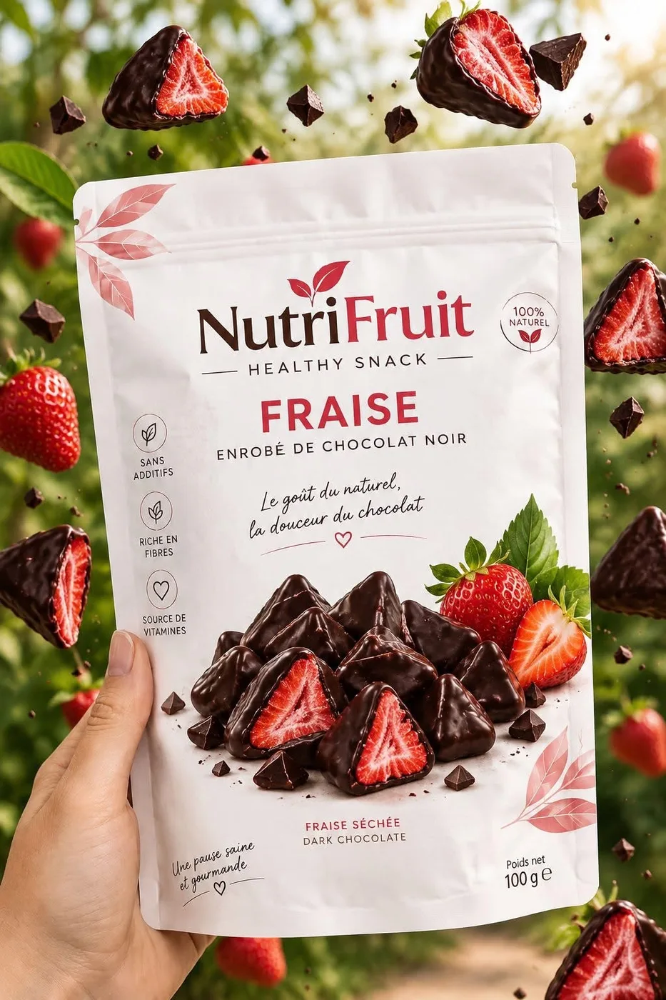

Faire de chaque saveur un rendez-vous sur vos réseaux.
Un compte NutriFruit vivant, coloré et régulier : une saveur à l'honneur chaque semaine, des moments de vie, des jeux et des points de vente mis en avant. Voici à quoi pourrait ressembler votre fil.
avec la création du site · visuels
🍓 Fruits séchés enrobés de chocolat noir
🌿 100 % naturel · sans additifs
📍 Où nous trouver ↓
Six rendez-vous
pour votre audience.
Chaque publication a un rôle : faire goûter, rassurer, faire participer ou faire acheter.
La saveur de la semaine
Chaque semaine, un fruit à l'honneur : visuel produit, texture, gros plan sur le chocolat.
Les moments de vie
Le cartable, la pause au bureau, le goûter après l'école, la salle de sport.
Les bienfaits
Fibres, vitamines, sans additifs : des formats courts, simples et rassurants pour les parents.
Idées & recettes
Topping de yaourt, plateau de fête, pause café : de nouvelles façons de les déguster.
Jeux & communauté
Sondages en story, « devine la saveur », concours mensuel avec un coffret à gagner.
Où trouver NutriFruit
Mise en avant des points de vente et appel aux nouveaux revendeurs.
Vos photos,
notre mise en scène.
Des visuels réalisés avec vos vraies photos produits et votre logo, aux couleurs de chaque saveur.
Saveur de la semaine : Fraise 🍓

Mangue ou ananas ?
La lunchbox qui fait envie 🎒
Régulier,
sans jamais lasser.
Publications du dimanche au jeudi, validées avec vous avant chaque mois.
On s'occupe de tout.
Vous validez, nous créons, publions et vous rendons compte chaque mois.
Cibles, saveurs prioritaires, points de vente à pousser.
Le planning du mois vous est soumis avant publication.
Avec vos vraies photos produits et votre logo.
Programmation, réponses aux commentaires et messages.
Portée, abonnés, interactions : ce qui marche, ce qu'on ajuste.
Votre 1er mois
de réseaux sociaux offert.
Avec la création du site NutriFruit, Webminds prend en charge vos publications pendant un mois (visuels). Sans engagement pour la suite.